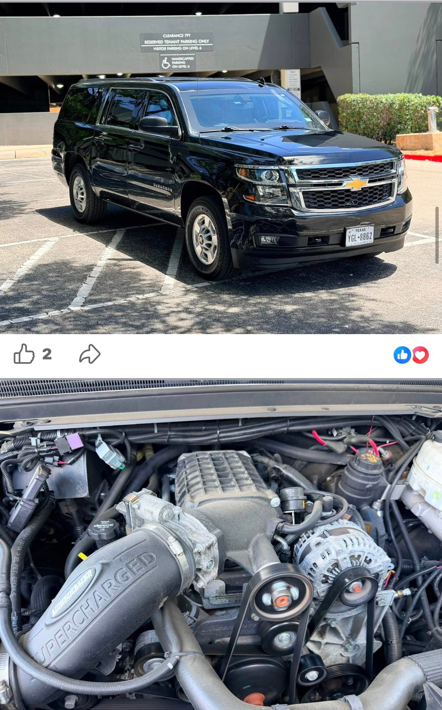
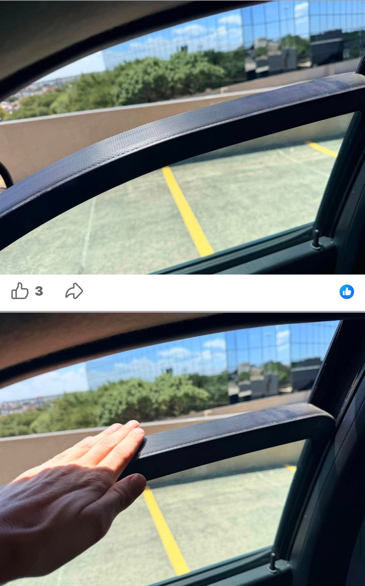
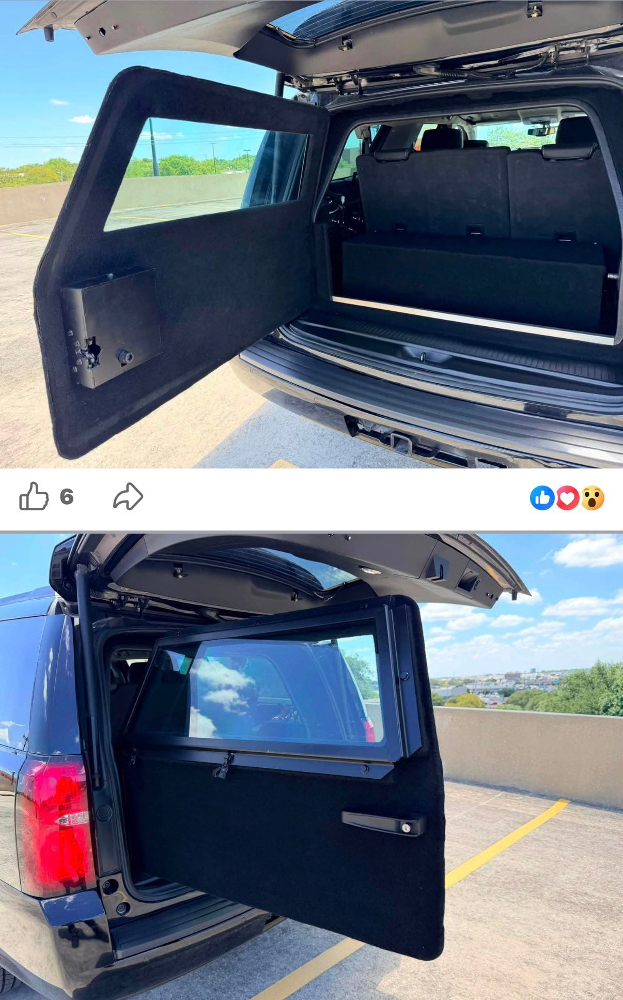
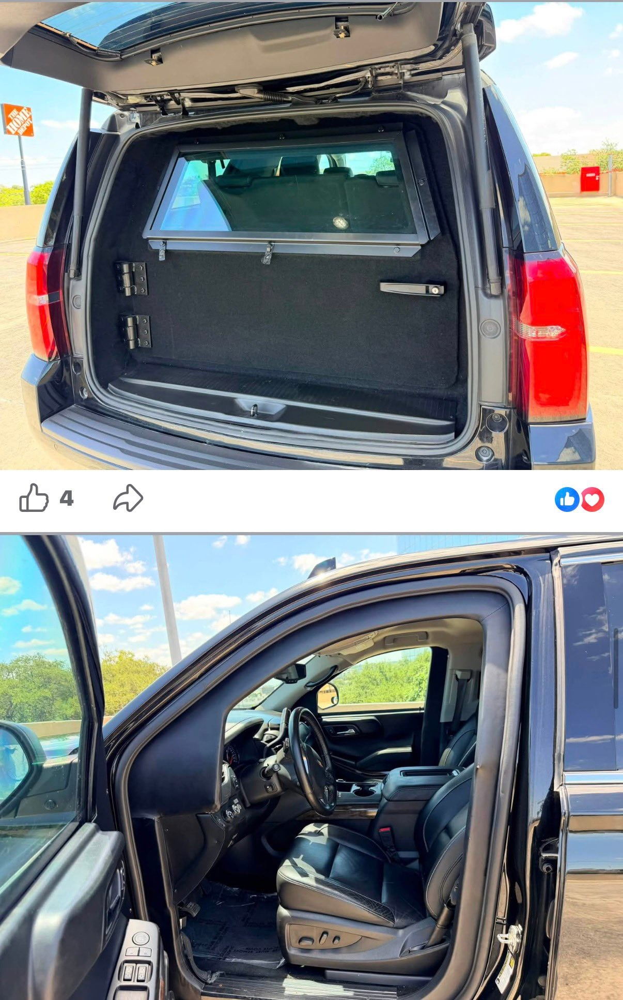

미국 중고차 시장, 가끔 나오는 물건이 이상해.
2019 시보레 서버번 3500HD
B6 방탄 사양
차중 5톤 초과
6.OL V8 + 슈퍼차저
주행 약 3.4만km
정부 기관 사용 이력 신차 시 총 제작비 1억 엔 초과
현재 판매가는 2,000만 엔




미국 중고차 시장, 가끔 나오는 물건이 이상해.
2019 시보레 서버번 3500HD
B6 방탄 사양
차중 5톤 초과
6.OL V8 + 슈퍼차저
주행 약 3.4만km
정부 기관 사용 이력 신차 시 총 제작비 1억 엔 초과
현재 판매가는 2,000만 엔
댓글
수집 당시 댓글 42개
kmki · 3 일 전
비스트여?
토마토케첩 · 3 일 전
Rldydhd · 3 일 전
미국은 정부에서 쓰던차 경매 자주나옴. 여기 같이 일하는 사람 한명도 닷지 경찰차 방탄문짝+4륜에 V8 hemi, 프레임 강화버전(참고로 닷지차저 민간버전은 4륜 존재 안함.) 7천달러에 경매로 사서 고쳐서 쓴다더라. 그거 문짝 방탄되어있고 뒷문 손잡이 없음.
게이야 · 2 일 전
방탄차 연비 겁나안좋다던데 민간에서 어케쓰는거여ㅋㅋ
오늘도어제같이 · 2 일 전
주말 되면 이상한 차 많이 봄 평상시엔 연비 좋은 차 타고
동시흥분기점 · 2 일 전
그냥 돈지랄하는거지 ㅋㅋ
아카이브원 · 2 일 전
그냥 취미생활이지 ㅋ
EMETL · 2 일 전
민간 시장에 불하되는 경찰차 출신 인터셉터들 가끔 중고차 시장에서 보는데 간지 하나는 작살남... 다만 사서 고쳐가며 탈 자신은 없어서 쳐다만 보게 되더라
봄동비빔밥 · 2 일 전
세계적인 명차 시보레!
RCkitten · 2 일 전
5톤 초과 ㅅㅂ ㅋㅋㅋㅋㅋㅋㅋㅋ 에스컬레이드가 2.7톤인대... 거의 두개를 합친 무게네?
등가교환 · 2 일 전
일반 양산차들도 점점 무거워짐... 시에라 ev, 실버라도 ev 거의 5톤... 배터리때문이긴함..
오류가발생했습니다 · 2 일 전
시에라 ev / 실버라도 ev 각각 3990kg, 3870kg인데 거의 4톤이지 거의 5톤?
등가교환 · 2 일 전
실버라도 ev RST 모델 10500 파운드.. 4762kg .. 모델별로 좀 차이가 있긴함 만파운드 넘어서 미디엄 트럭 할인도 받음 ㅋㅋ 24년식 시에라ev는 풀옵기준으로 10,550 lbs ..
오류가발생했습니다 · 2 일 전
오 시발 ㄹㅇ이네 존나무겁네
Ausfaller · 2 일 전
에스컬레이드 방탄사양은 최대 9톤까지 나가긴 해
Soyuz · 2 일 전
서스가 버티냐??
미운오리새끼떡하나더준다 · 2 일 전
미국인데 왜 엔이야?
킹꼬리원숭이 · 2 일 전
미국인데 왜 엔이야?
IilillilIil · 2 일 전
엔은 시발 ㅋㅋㅋ
품절남 · 2 일 전
미국인데 왜 엔이야?
등가교환 · 2 일 전
그러니까 수상하지...ㅋㅋㅋ
overflow승희 · 2 일 전
단순히 일본에올라온글 번역돌려다가 퍼온거라 엔화인건 안수상함ㅋㅋ
다주택중과세폐지 · 2 일 전
공매 온비드 사이트에 정부에서 쓰던거 많이팔더라 경찰차도 매물로나오고 알아서 다 개조한거 복구해야함 이것저것 나오는데 살건없음
x0은0 · 2 일 전
요샌 다 렌탈할텐데
감자깡 · 2 일 전
엔화는 뭐임ㅋㅋㅋㅋㅋㅋ
overflow승희 · 2 일 전
번역그대로퍼온
치맥전자 · 2 일 전
왜 엔이야 달러 아니고
r4e3w2q1 · 2 일 전
야쿠자 드림카임?
스크래치헬멧 · 2 일 전
가끔 나오는 경찰차 매물은 절대 사지말것
년을쫓는아이 · 2 일 전
왜왜왜? 요 근래 호기심에 보는데 안돼나?
번째유저 · 2 일 전
고출력으로 달릴일이 없어서 엔진이 씹창나있음
대천왕중최약체 · 2 일 전
급가속 급정지 존나많음 피트기동도 하면 일단 사고차임ㅋㅋ 운 나쁘면 총알구멍도 있음 그런 이력 알고 사는게 아니라면 존나비추 한국 경찰차 출신들은 제자리 공회전 존나 돌려서 이거도 비추 ㅋㅋㅋ
게임은PC로 · 2 일 전
연비 살살 녹아요
회사에서코고는중 · 2 일 전
호위차량이나 특수차량을 유지할 수 있는 이유는 유지비가 세금으로 나가기 때문이다 5톤짜리면 연비에서 이미 모든게 박살났다
박제 · 2 일 전
미국에서 판매하는데 화폐 단위는 엔 ㅋㅋㅋㅋㅋㅋ
캬루룽 · 2 일 전
일본 커뮤에 올라온 글 퍼온거라
살쪄서숨쉬기힘든애 · 2 일 전
dcdnf13 · 2 일 전
ㅋㅋㅋㅋㅋㅋㅋㅋㅋㅋㅋㅋㅋㅋ ㅅㅂ
꼴리는대로살자 · 2 일 전
경량화하면 개쩌는 출력의 차량이 그냥 완성되는거 아니냐?
대천왕중최약체 · 2 일 전
다시 개조하는데 드는 돈이 그냥 한대 새로 사는정도로 들걸
overflow승희 · 2 일 전
애들 왜 번역체못알아보냐
고니라고해요 · 2 일 전
5톤이면 기름값으로 다나가겄다